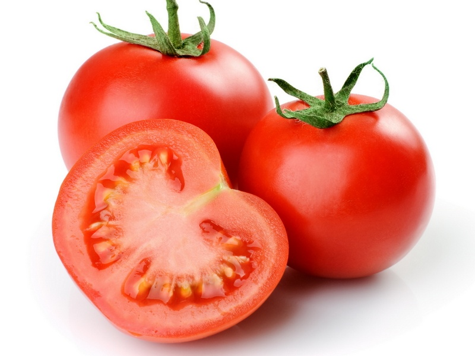

Тома́т (лат. Solánum lycopérsicum) — однолетнее или многолетнее травянисто е растение, вид рода Паслён (Solanum)[2] семейства Паслёновые (Solanaceae). Возделывается как овощная культура. Плод томата (ягода) в разговорной речи называется помидо́р.